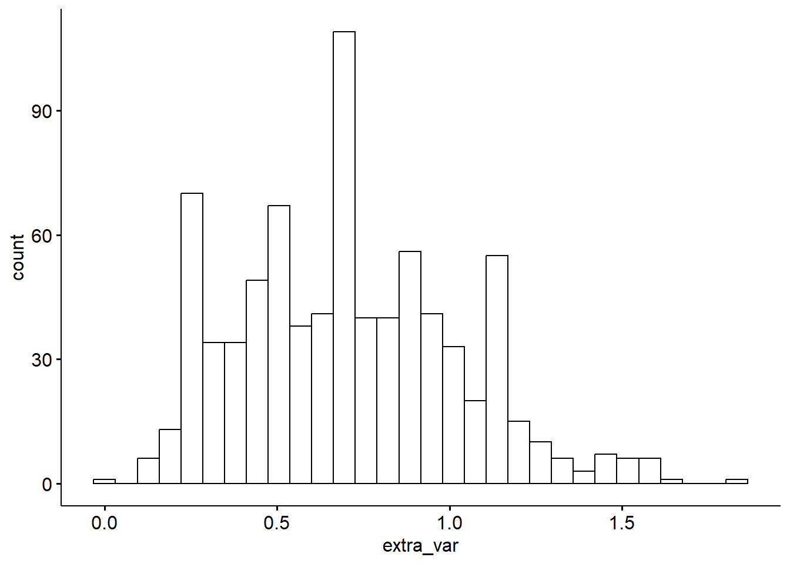

11 Auswerten: Daten aufbereiten
11.1 Lernsteuerung
11.1.1 Lernziele
- Sie können grundlegende Schritte der Datenaufbereitung in R durchführen.
- Sie können die typischen Schritte einer deskriptiven Datenanalyse durchführen in R.
- Sie können Grenzen Ihrer Auswertungsmethodik nennen.
11.1.2 Position im Lernpfad
Sie befinden sich im Abschnitt “Auswertung” in Abbildung 1.2. Behalten Sie Ihren Fortschritt im Projektplan im Blick, s. Abbildung 1.3.
11.1.3 Benötigte R-Pakete und Daten1
data_url <- "https://raw.githubusercontent.com/sebastiansauer/modar/master/datasets/extra.csv"
extra <- data_read(data_url) # aus `{easystats}`Anstelle von data_read könnten Sie auch read_csv (Tidyverse) oder read.csv (Standard-R) verwenden.
11.2 Typische Schritte beim Daten aufbereiten
Häufig sind Daten noch nicht “aufbereitet” und müssen noch “geputzt” oder “aufgeräumt” werden. Dazu gehören Schritte wie
- Datentabellen zusammenführen
- Daten umkodieren
- Daten aggregieren
- Daten gruppieren
- Fehlende Werte ersetzen
- Datenqualität prüfen
- Verteilungsformen prüfen
- Ausreißer behandeln
Betrachten wir im Folgenden einige zentrale Aspekte dieser Schritte.
11.2.1 Datentabellen zusammenführen
Sie haben die Daten anhand mehrerer Fragebogen erhoben? Oder Sie haben mehrere Gruppen untersucht? Jetzt haben Sie mehrere Datentabellen, die auf eine Analyse harren?
Verheiraten ist angesagt: Sie müssen alle Teiltabellen in eine Tabelle (Datensatz) bringen.
Dazu kann man zwei Fälle unterscheiden:
- Zeilenweises zusammenführen
- Spaltenweises zusammenführen
Das kann man in Excel-Programmen erledigen, aber auch in R.
Um es in R zu erledigen, müssen Sie erst eine Idee verstehen und dann etwas Syntax lernen. Warum sollten Sie die vielleicht 10 Minuten Lernaufwand investieren?
Ein Grund ist, dass es sinnvoll für Ihre berufliche Entwicklung ein Kernkonzept der Datenaufbereitung zu verstehen.
Ein anderer Grund ist, dass Sie mit einer Skriptsprache (wie R) ein “Kochrezept” erstellen, dass Sie ohne Zusatzaufwand wiederholt durchlaufen lassen können. Und, glauben Sie mir, in einer Datenanalyse passiert es oft, dass man mehrere (viele!) Durchläufe braucht, bis man mit dem Ergebnis zufrieden ist. Außerdem dokumentiert so ein Kochrezept Ihr Vorgehen transparent. Reproduzierbarkeit ist zentral für die Wissenschaft (und Technik).
11.2.1.1 Zeilenweises zusammenführen
Beispiel 11.1 Jede Versuchsperson Ihrer Studie hat zwei (oder mehrere) Fragebögen ausgefüllt. In Datensatz A finden sich die ersten paar Variablen und in Datensatz B die restlichen Variablen. Aber in beiden Datensätzen kommen alle Personen vor. \(\square\)
Abbildung 11.1 veranschaulicht das zeilenweise Zusammenführen.
Etwas ausführlicher ist der Sachverhalt im Listing Listing 11.1 dargestellt.
Sagen wir, wir haben zwei Tabellen, die wir “untereinander” (also zeilenweise) “zusammenkleben” möchten. Dann hilft uns bind_rows().
11.2.1.2 Spaltenweises Zusammenführen 1
Beispiel 11.2 In jeder Gruppe Ihrer Studie wurde ein anderer Fragebogen ausgefüllt (z. B. weil Sie unterschiedliche experimentelle Gruppen untersucht haben). Sie haben also zwei Datensätze mit unterschiedlichen Personen (nämlich in Datensatz A die Personen der Gruppe A und in Datensatz B die Personen der Gruppe B). Aber in jedem Datensatz finden sich die gleichen Variablen. \(\square\)
?fig-bind-cols veranschaulicht das spaltenweise Zusammenführen von Tabellen.
Sagen wir, wir haben zwei Tabellen, die wir “hintereinander kleben” möchten, also spaltenweise zusammenführen möchten, s. Listing 11.2.
Hier findet sich auch ein nützliches Beispiel.
Achtung Diese Art des Zusammenfügens prüft nicht, ob die Sortierung der Tabellen identisch ist: Ob also die Zeile für “Schorsch” aus Tabelle 1 auch mit Schorschs Zeile aus Tabelle 2 zusammengefügt werden (und nicht etwas mit denen von Alois). Sie müssen also selber dafür sorgen, dass die Sortierung richtig ist. Alternativ könnten Sie mit einem join arbeiten, der die korrekte Sortierung für Sie übernimmt. \(\square\)
11.2.1.3 Spaltenweises Zusammenführen 2
Abbildung 11.3 veranschaulicht das spaltenweise Zusammenführen, wenn die Sortierung der Tabellen nicht übereinstimmt.
Definition 11.1 (Join zweier Tabellen) Das spaltenweise Zusammenführen zweier Tabellen unter der Beachtung der Sortierung nennt man einen “Join”. Genauer gesagt versteht man unter “Sortierung” die Beachtung der Werte einer ID-Spalte (auch “Key-Spalte”) genannt. \(\square\)

Bildquelle: Garrick Aden-Buie, CC-BY-SA 4.0
11.2.2 Text in Zahlen umwandeln
11.2.2.1 Hilfe, ich habe keine Zahlen
Kennen Sie das? Sie haben eine Umfrage durchgeführt, Daten sind erhoben, puh, bald können Sie das Projekt abschließen.
Jetzt haben Sie die Daten in R importiert, aber müssen zu Ihrem Schrecken feststellen, dass die Spalten (Variablen) die eigentlich Zahlen sein sollten, als character, Text also, formatiert sind in R.
Anstelle der Zahl 5 steht in der Spalte also "5" (man beachte die Anführungszeichen, die anzeigen, dass es sich um einen Text handelt).
Na toll.
Mit Wörtern (Text) kann man nicht rechnen, und Sie rechnen doch so gern…
R weigert sich standhaft, mit Text zu rechnen:
"5" + "5"
## Error in "5" + "5": non-numeric argument to binary operatorHätten wir brave Zahlen, wäre alles paletti:
5+5
## [1] 10Der Einfachheit halber erzeugen wir uns eine einfache Tabelle, mit ein paar Spalten, die als Text formatierte Zahlen enthalten:
d <- tibble(i01 = c("1", "3", "4"), # von 1 bis 4
i02 = c("-2", "+3", "-1"), # von -3 bis -3
i03 = factor(c("-2", "+2", "-1"))) # als Faktorvariable formatiert
dFür diejenigen, die kompliziert mögen, ist hier noch eine factor-Spalte hinzugefügt. Erstmal ignorieren.
Stellen Sie sich vor, die Tabelle ist ein Auszug aus Ihrer Umfrage, wobei i01 das erste Item (Frage) Ihres Fragebogens darstellt etc.
Wie kann man R beibringen, dass die fraglichen Spalte i01 doch “in Wirklichkeit” Zahlen sind und kein Text?
Welcher R-Befehl hilft hier?
11.2.2.2 Introducing parse_number()
parse_number() (aus tidyverse) löst das Problem für Sie:
d2 <-
d %>%
mutate(i01_num = parse_number(i01))
d2So würde es in einigen Fällen auch gehen:
d %>% mutate(i01_r = as.numeric(i01))Aber wenn i01 als factor() formatiert ist, dann geht es nicht unbedingt.
d %>% mutate(i02_r = as.numeric(factor(i02)))Hoppla! Die Zahlen passen nicht!
parse_number() verlangt als Input character, so dass Sie ggf. noch von factor auf character umformatieren müssen.
d %>% mutate(i03_r = parse_number(as.character(i03)))11.2.2.3 VERTIEFUNG Schleifen
Definition 11.2 (Schleife) Eine Schleife ist ein Operation, die einen Befehl (im Rahmen der computergestützten Datenanalyse) mehrfach (wiederholt) ausführt. Da im Kontext der Datenanalyse oft mit Tabellen gearbeitet wird, bezieht sich die Wiederholung oft auf eine Spalten-Operation, die dann für mehrere Spalten wiederholt wird. \(\square\)
Wir können einen Befehl auf mehrere Spalten einer Tabelle anwenden, und zwar mit across (aus tidyverse):
Neben as.character könnte parse_number ein Befehl sein, den man auf mehrere Spalten gleichzeitig anwenden will:
Natürlich müssen Sie across nicht verwenden; Sie können auch “von Hand” die Spalten einzeln beatmen und jeweils (pro Spalte) as.character und parse_number anwenden.
11.2.3 Items umkodieren
In Fragebogen werden immer wieder Items negativ kodiert. Das bedeutet, dass sie gegenteilig zum messenden Konstrukt formuliert sind. Ist das Konstrukt Extraversion, so würde ein negatives Item im Sinne von Introversion kodiert sein. Ein Beispiel-Item für negative Kodierung wäre: “Ich bin ein Couch-Potato” oder “Ich bleibe am liebsten alleine zuhause.”
Zuerst müssen wir die Anzahl der Antwortstufen wissen; diese Information findet sich in der Dokumentation der Skala (im “Manual” auch “Testdokumentation” oder “Benutzerhandbuch” genannt). Natürlich kann man prüfen, welche Antwortstufen die Respondenten gefunden haben, aber man wäre nicht sicher, ob auch alle möglichen Antworten ausgeschöpft wurden.
Im vorliegenden Fall ist der Dokumentation des Instruments zu entnehmen, dass jedes Item vier Antwortstufen (Likertformat) aufweist. Likert-skalierte Items zeichnen sich dadurch aus, dass sie so formuliert sind, dass höhere Werte in der Antwortstufe mit höherer Ausprägung des zu messenden Konstrukts einher gehen.
Beim Umkodieren wird das Item “auf den Kopf gestellt”: Der höchste Wert wird der kleinste, der zwei kleinste wird der zweitgrößte und so weiter. Im Schema sieht dies so aus:
1 --> 4
2 --> 3
3 --> 2
4 --> 1
alter Wert --> neuer WertZum Umkodieren der Werte negativ kodierter Items bietet sich die Funktion recode_values aus easystats an.
In diesem Fall ist das Item i02r bereits umkodiert – genau wie alle Items im Datensatz die mit dem Suffix r gekennzeichnet sind. Daher war das Umkodieren hier nicht nötig – sogar falsch, um genau zu sein. Das diente nur zu Übungszwecken. In anderen Situationen kann es aber nötig sein, Items umzukodieren. Vergessen Sie dann nicht, das Ergebnis (die resultierende Tabelle) als (neuen) Datensatz zu speichern.
Alternativ zu recode_values können Sie auch folgende Rechenmethode verwenden:
\[\text{neuer Wert} = \text{Anzahl Kategorien} + 1 - \text{alter Wert}\] Diese Rechenmethode funktioniert aber nur, wenn z. B. bei vier Antwortstufen die Ausprägungen mit 1,2,3,4 kodiert sind. Allgemeiner: Bei \(n\) Ausprägungen müssen die Werte mit \(1,2, \ldots, n\) kodiert sein, so dass die Ausprägungen den Werten entsprechen.
11.2.4 Item-Labels in Zahlen umwandeln
Eine ähnliche Sache wie das Umpolen von Items ist folgende Situation: Ihre Umfrage-Software spuckt als Item-Antworten die “Ankertexte” oder “Itemlabels” aus wie stimme überhaupt nicht zu oder stimme voll und ganz zu. Da man bekanntlich (höchstens) mit Zahlen aber nicht mit Texten rechnen kann, möchten Sie diese Itemlabels in Zahlen umwandeln. Das sieht dann ähnlich zu folgendem Wenn-Dann-Regel-Schema aus:
stimme voll und ganz zu --> 4
stimme eher zu --> 3
stimme eher nicht zu--> 2
stimme überhaupt nicht zu --> 1Dieses Umwandeln können Sie mit case_when() vornehmen. case_when() listet einfach Wenn-Dann-Regeln auf.
Erzeugen wir uns mal eine einfache Tabelle, um die Sache zu illustrieren:
d <-
tibble(person_nr = 1:3,
i01 = c("stimme überhaupt nicht zu", "stimmer eher zu", "stimme voll und ganz zu"))
dSo ähnlich würden also Ihre Daten aussehen.
Jetzt zum Umwandeln:
d %>%
mutate(i01_r = case_when(
i01 == "stimme überhaupt nicht zu" ~ 1,
i01 == "stimme eher nicht zu" ~ 2,
i01 == "stimme eher zu" ~3,
i01 == "stimme voll und ganz zu" ~ 4
))Die Syntax von case_when() lautet:
case_when(Prüfung ~ Konsequenz,
Prüfung2 ~ Konsequenz)Nur wenn Prüfung erfüllt ist (den Wert TRUE hat), dann wird Konsequenz ausgeführt. Ansonsten wird auf Prüfung2 getestet, etc.
Eine alternativer Weg des Umkodierens ist recode_value() aus easystats zu nutzen.
11.2.5 Fehlende Werte ersetzen
Wie geht man mit fehlenden Werten um? Das ist im Detail keine leichte Frage. Eine einfache Antwort ist: alle Zeilen mit fehlenden Werten löschen. Das hat aber den Nachteil, dass man ggf. viele Daten verliert. Eine andere einfache Antwort lautet: Nichts machen. Das kann ein sinvoller Start sein; zumindest macht man nichts kaputt.
Was die ID-Spalte betrifft, sollte man aber fehlende Werte ersetzen, damit man jede Zeile identifizieren kann.
extra_nona_in_id_col <-
extra |>
mutate(code = replace_na(code, "fehlt")) # aus tidyverseÜbungsaufgabe 11.1 Betrachten Sie beide Tabellen (mit der Tabellenansicht in RStudio) und finden Sie den Unterschied in der Spalte code. \(\square\)
11.2.6 Zeilen (Fälle) löschen
11.2.6.1 Zeilen löschen nach ID-Spalte
In jeder braven Tabelle steht pro Zeile (genau) ein Fall; mit “Fall”, auch als “Beobachtung” bezeichnet, ist ein Untersuchungsobjekt gemeint. Häufig sind das in der Psychologie Personen, es könnten aber auch z. B. Versuchsdurchgänge, Teams oder Firmen sein. Sagen wir, Sie möchten einen bestimmten Fall löschen. Der Einfachheit halber nehmen wir den ersten Fall der Tabelle extra. Hier hat jeder Fall schon eine “ID”, eine unique, also eineindeutige Zuordnung, das ist die Spalte code. Auch die Spalte timestamp taugt vermutlich für eine Zuordnung.
In R könnten Sie die erste Zeile also anhand dieser ID-Spalte ansprechen und entsprechend filtern. Sagen wir, wir möchten die Person/Datenzeile mit der ID “HSC” entfernen:
11.2.6.2 Vertiefung
Schauen Sie sich mal diese Variante an:
Falls die ID-Spalte (code) fehlende Werte hat, könnten Sie sich wundern: extra |> filter(code != "HSC") hätte zwar die Zeile, in der bei code der Wert HSC steht entfernt, aber auch alle Zeilen, in denen bei code NA steht. Darum haben wir die fehlenden Werte explizit drinnen gelassen. Die technischen Details für dieses vorsichtige Verhalten von filter() finden sich hier.
Prüfen wir die Anzahl der Zeilen:
Falls Ihr Datensatz über keine ID-Spalte verfügt, können Sie so eine hinzufügen:
Und jetzt können wir entspannt filtern:
11.2.7 Datenqualität prüfen
Bevor wir die Daten interpretieren, müssen wir sie auf Herz und Nieren prüfen, ein Daten-Gesundheitscheck2.
Ein paar typische Probleme, die man immer wieder findet, und die wir gelöst haben wollen, sind:
- Dubletten (doppelte Zeilen/Fälle) in den Daten
- Eingabefehler (unplausible oder unmögliche Werte)
- Zu schnelle Bearbeitungszeit (pro Item 1 Sekunde Bearbeitungszeit erlaubt nicht wirklich überlegte Antworten)
- Geringe Eingabequalität: Versuchspersonen haben “Blümchen gekreuzt”, also keine ernsthaften Antworten gegeben
- …
11.2.7.1 Auf Dublikate prüfen
Betrachten wir der Einfachheit halber folgenden Datensatz, in dem die erste und zweite Zeile identisch sind; die zweite Zeile ist also eine Dublette (Dublikat). Die dritte Zeile ist unique.
Genau genommen hat df keine Dublikate, aber wenn wir die Spalte id ausklammern, dann schon:
df |>
select(2, 3)Dann kann man distinct(), nutzen, um Dublikate zu entfernen:
Man kann distinct() auch nutzen, um nur in bestimmten Spalten auf Dublikate zu suchen:
df |>
distinct(x, y, .keep_all = TRUE)Ohne das .keep_all = TRUE werden nur die Spalten x und y zurückgeliefert (also die Spalten, die wir bei distinct() ausgewählt hatten):
df |>
distinct(x, y)11.2.7.2 Auf Eingabefehler prüfen
Sagen wir, für Variable x ist nur ein einzelner Buchstabe erlaubt; alles andere ist ein Eingabe- oder sonstiger Fehler. Eine Variable vom Typ “Text” heißt in R Character oder String. Mit str_length(x) bekommt man entsprechend die Länge eines Strings. Hier prüfen wir, ob die String-Länge 1 ist, dann alles okay. Wenn die String-Länge von x (für eine bestimmte Zeile) ungleich 1 ist, dann nicht-okay:
df_check <-
df %>%
mutate(x_check_okay = case_when(
str_length(x) == 1 ~ TRUE,
str_length(x) != 1 ~ FALSE
))
df_checkJetzt könnten wir alle “bösen” Zeilen rausschmeißen:
Als Nächstes prüfen wir, ob y, eine metrische (numerische) Variable den richtigen Wertebereich hat. Sagen wir, Es sind nur positive Werte nicht größer als 5 erlaubt, also 0<x<=5.
df %>%
mutate(y_check_okay = case_when(
0<y & y<=5 ~ TRUE, # wenn y im erlaubten Wertebereich, dann okay
TRUE ~ FALSE # ansonsten: nicht-okay
))case_when arbeitet die Prüfbedingungen zeilenweise ab. Ist die erste Zeile (0<y & y<=5) nicht erfüllt, dann können wir R sagen: “Immer nicht okay”, das erreichen wir mit TRUE (TRUE ist immer wahr) ~ FALSE (y_check_okay wird auf FALSE) gesetzt.
Im Anschluss könnten wir wieder die “bösen Zeilen” herausfiltern.
11.2.7.3 Geringe Eingabequalität
Vielleicht hätte ihr Fragebogen nicht so lang sein sollen, 60 Minuten Befragung war dann wohl doch etwas viel.
Erfahrungsgemäß verliert man pro Seite Fragebogen substanziell Versuchspersonen. Zehn Minuten sind für viele Menschen schon eine lange Befragung. Also: Beim nächsten Mal kürzer halten.
Schlimmer noch als keine Antworten sind allerdings schlechte Antworten, wenn Versuchspersonen (aus Demotivation heraus) “Blümchen” kreuzen. Häufig bedeutet das, dass einfach immer die erste Antwortoption angekreuzt wird; das ist am einfachsten für die Versuchsperson.
Wir stellen uns dabei Fragen wie:
- Hat eine Versuchsperson wenig (keine) Varianz in ihrem Antwortverhalten?
- Hat eine Versuchsperson viel mehr Varianz als die (allermeisten) anderen?
Technisch gesprochen prüfen wir pro Person mehrere Spalten eines Datensatzes, etwa indem wir die Varianz berechnen. Eine Komplikation ist, dass Datensätze in R spaltenweise aufgebaut sind, wir aber das Ergebnis pro Zeile (Versuchsperson) haben möchten.
extra2 <-
extra %>%
rowwise() %>%
mutate(extra_var = var(c_across(i01:i10)))
extra2 %>%
select(extra_var) %>%
arrange(extra_var) %>%
head()c_across() hat das gleiche Ziel wie c(). Da aber c() bei zeilenweisen Operationen nicht verwendet kann (das checkt c() leider nicht), greifen wir auf seinen Cousin, c_across() zurück, der das kann. \(\square\)
Aber was ist viel und was ist weniger Varianz in diesem Zusammenhang?
Am besten schauen wir uns mal die typische Varianz der Itemantworten für diesen Datensatz an.
library(ggpubr)
extra2 %>%
gghistogram(x = "extra_var")
Auf dieser Basis könnte man Fälle (Versuchspersonen, d. h. Zeilen) entfernen, die keine Varianz oder eine Varianz höher als 1.75 aufweisen.
11.2.8 Scores berechnen
11.2.8.1 Summen- und Mittelwerte
In der Psychometrie werden komplexe Konstrukte wie etwa das Persönlichkeitsmerkmal Extraversion anhand mehrerer Indikatoren (meistens Items eines Fragebogens) gemessen. Um zu einem Personenwert für Extraversion zu gelangen, werden die Itemwerte im einfachsten Fall summiert. Alternativ kann man auch einen Mittelwert bilden. Dieses Aggregieren bietet den Vorteil, dass sich Messfehler (möglicherweise) herausmitteln. Außerdem versucht man so abzubilden, dass Extraversion aus mehreren unterschiedlichen Facetten besteht, die nicht mit einem einzelnen Item, sondern über mehrere unterschiedliche Items, erfasst werden. Viele Psychometriker sind skeptisch, wenn man versuchen würde, Extraversion mit der Frage “Wie extrovertiert sind Sie?” zu erfassen. Ihre Bedenken sind, dass Menschen die vielen Facetten von Extraversion nicht im Arbeitsgedächtnis vorhalten können. Fragt man hingegen nur einen kleinen Aspekt von Extraversion ab, trägt man der Breite des Konstrukts nicht Rechnung.
Die Zusammenfassung der Itemwerte eines Konstrukts zu einem Mittelwert oder einem Summenwert bezeichnet man als Score.
Ein einfaches Beispiel zur Berechnung des Extraversion-Summenscore:
extra_bsp <- extra %>%
select(i01:i03) %>%
slice_head(n = 3) %>%
mutate(extra_sum = i01 + i02r + i03)
extra_bspDer Wert von extra_sum berechnet sich jeweils als Summe der drei Itemwerte. Mit dem Mittelwert verhält es sich analog (s. Tabelle 11.1).
| i01 | i02r | i03 | extra_sum | extra_mean |
|---|---|---|---|---|
| 3 | 3 | 3 | 9 | 3.00 |
| 2 | 2 | 1 | 5 | 1.67 |
| 3 | 4 | 1 | 8 | 2.67 |
Praktischerweise gibt es Funktionen, die die Berechnung eines Scores noch weiter vereinfachen, zum Beispiel im Paket easystats: row_means() (Mittelwert pro Person). Da Respondenten (meist Personen) in Zeilen stehen heißen die Befehle row_XXX(). Fragt sich noch, ob es mehr Sinn macht, einen Summenscore oder einen Mittelwert zu berechnen. Kurz gesagt macht es keinen großen Unterschied, solange es keine fehlenden Werte gibt. Gibt es aber fehlende Werte, sollte man Mittelwerte statt Summenwerte vorziehen.
11.2.8.2 Vertiefung: Summen- vs. Mittelwertscores
Dazu ein erläuterndes Beispiel. Alois habe in einem Persönlichkeitstest mit 3 Items nur Item 1 beantwortet und zwar mit “3”, wobei Antwortstufen von 1 bis 4 vorgegeben waren. Vermutlich ist der Gesamtwert im Form des Summenscores von 3 zu klein, unterschätzt als Alois’ Wert. Schließlich hat er beim ersten Item die Antwort “3” gewählt, insofern ist es plausibel, dass er bei den anderen auch diese Option gewählt hätte. Somit hätte er insgesamt 9 Punkte (nicht 3) erzielt. Würden wir 3 als Gesamtwert (Summenscore) annehmen, so bedeutet das, das wir davon ausgehen, dass er im Schnitt “1” gewählt hat - Eine Annahme, die nicht sehr plausibel erscheint.
Vergleichen wir das mit dem Mittelwert-Score. Jetzt lassen wir R die Rechenarbeit machen:
Der Mittelwert von Alois beträgt 3 – das passt genau zu unserer Argumentation von gerade (s. oben), dass 3 eine bessere Schätzung der Ausprägung der latenten Variable von Alois ist. Daher ist der Mittelwert dem Summenscore vorzuziehen.
Ein anderer Vorteil des Mittelwerts ist, dass er etwas anschaulicher ist als der Summenscore: Ein Mittelwert von 3 (auf einer Skala von 1 bis 4) ist anschaulicher als eine Summe von 9 (bei drei Items). Wir werden d. h.r den Mittelwert vorziehen.
Noch anschaulicher wäre es, die Mittelwerte auf den Bereich von 0 bis 1 zu normalisieren.
11.2.8.3 Berechnung mit R
Wie in jeder Sprache gibt es auch in R oft mehrere Möglichkeiten, um eine Sache auszudrücken. Betrachten wir im Folgenden, wie man einen Score, also einen Zeilenmittelwert, berechnet.
11.2.8.3.1 Mit easystats
row_means wohnt im Paket easystats.
extra %>%
mutate(extra_avg =
row_means(extra, select = i01:i10, min_valid = .9)) |>
select(extra_avg) %>%
slice_head(n = 3)Der Parameter min_valid bei row_means() gibt den Anteil der nicht fehlenden Werte (pro Zeile) wieder, damit ein Wert berechnet wird: Bei zu vielen fehlenden Werten (zu wenig Daten) pro Person wird sonst NA zurückgeliefert. Das ist sinnvoll, denn hat eine Person von 10 Items nur 1 Item beantwortet, so kann man wohl nicht zuverlässig sagen, dass Extraversion in seiner Breite zuverlässig geschätzt wird. Die Funktion fügt dem Datensatz eine Spalte hinzu, deren Name mit var angegeben wird.
11.2.8.3.2 Mit tidyverse
Die Idee von rowwise() ist es, den Datensatz so in Gruppen einzuteilen, dass jede Zeile eine Gruppe ist. Dann wird für jede “Gruppe” (Zeile) eine normale Operation durchgeführt.
Leider versteht der c()-Befehl es nicht, wenn man ihm mehrere Spalten (Vektoren) als Input gibt. i01 und i02 etc. sind technisch gesehen jeweils Vektoren. Der c()-Befehl verkraftet leider nur einen Vektor mit Daten als Input. Daher brauchen wir einen verwandten Befehl, der wie c() funktioniert, aber mehrere Vektoren als Eingabe akzeptiert: Enter c_across().
11.2.9 Standardisieren mit z-Werten
Man kann die Aussagekraft eines Mittelwerts noch erhöhen, in dem man ihn standardisiert, z. B. mit der z-Transformation. Das geht zum Beispiel so:
extra_std <- extra %>%
standardize(select = extra_mean, append = TRUE)Die Funktion standardize() z-standardisiert eine oder mehrere angegebene Spalten. Setzt man den Schatler append auf TRUE, werden neue Spalten erzeugt, deren Namen gleich dem alten Namen plus dem Suffix _z entspricht. Betrachten wir die ersten drei Zeilen:
extra_std %>%
select(extra_mean) %>%
slice_head(n = 3)Zu beachten ist, dass der Mittelwert der Stichprobe und deren Standardabweichung als Referenzwerte herangezogen wurden, nicht die entsprechenden Größen der Normierungsstichprobe.
11.3 Aufgaben
Im Folgenden ist eine Auswahl an Aufgaben zur praktischen Datenanalyse vorgestellt. Das sind genau die Probleme, auf die Sie treffen (könnten), wenn Sie Ihre eigenen Daten auswerten, jetzt oder bei einer späteren Analyse. Hier ist eine Auwahl an Aufgaben auf dem Bereich “Datenjudo”: